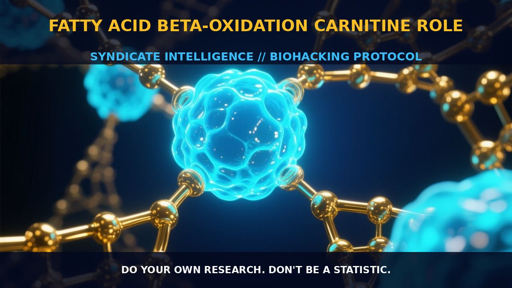

Enhancing Cognitive Performance with Fatty Acid Beta-Oxidation and

1. The Mechanism
Fatty acid beta-oxidation is a critical process in energy metabolism, breaking down fatty acids to produce acetyl-CoA, which enters the citric acid cycle to generate ATP. This process is particularly important during high energy demand periods such as prolonged fasting or intense exercise.
Unlike long-chain fatty acids, medium-chain fatty acids (MCTs) are rapidly oxidized due to their unique chemical properties. MCTs bypass the carnitine shuttle system and diffuse directly into the mitochondria, where they undergo beta-oxidation to yield acetyl-CoA. This rapid oxidation of MCTs accelerates the entry into ketosis, a metabolic state characterized by elevated levels of ketone bodies in the blood and urine.
Carnitine plays a pivotal role in the beta-oxidation of long-chain fatty acids by shuttling long-chain fatty acyl groups from the cytoplasm into the mitochondrial matrix, where they can be oxidized. Acetyl-L-Carnitine (ALCAR) is an acetylated form of L-Carnitine that can easily cross the blood-brain barrier, making it a valuable nootropic. ALCAR enhances mitochondrial function and acts as a neuroprotectant by boosting the synthesis of acetylcholine, a neurotransmitter crucial for cognitive function. In the context of beta-oxidation, ALCAR supports the metabolic processes that occur in the mitochondria, enhancing energy production and oxidative capacity of cells.
2. Biological Leverage
The primary biological leverage of beta-oxidation lies in its ability to efficiently produce ATP, the energy currency of cells. During beta-oxidation, fatty acids are broken down in a series of enzymatic reactions, yielding two molecules of acetyl-CoA, which then enter the citric acid cycle to generate ATP. This process is especially beneficial in the brain, where fatty acids serve as a significant source of energy.
The rapid oxidation of MCTs, facilitated by their direct diffusion into mitochondria, allows for a swift transition into ketosis, where ketone bodies like beta-hydroxybutyrate and acetoacetate serve as alternative energy sources for the brain. This metabolic flexibility enhances cognitive performance by providing a stable and efficient energy supply.
In addition to its role in energy production, beta-oxidation modulates cellular redox state and oxidative stress. Oxidative stress, a state characterized by an imbalance between the production of reactive oxygen species (ROS) and the body's antioxidant defenses, can impair cellular function and contribute to various pathologies. The oxidation of fatty acids generates ROS, but the process is tightly regulated, and the mitochondria possess antioxidant systems to mitigate oxidative damage. By enhancing beta-oxidation, particularly through the use of MCTs and ALCAR, one can promote efficient energy metabolism and support the cellular antioxidant defense mechanisms. This not only boosts energy availability but also enhances neuroprotection and cognitive resilience.
3. Tactical Implementation
To harness the benefits of beta-oxidation, biohackers can employ a combination of MCT oil and ALCAR in their daily routine. MCT oil can be consumed in low-to-moderate amounts to accelerate the entry into ketosis. A typical dose of MCT oil is around 1-2 tablespoons (15-30 grams) per day, depending on individual tolerance. Consuming MCT oil in the morning can provide a sustained energy boost and enhance cognitive performance by facilitating ketone body production.
Additionally, combining MCT oil with intermittent fasting or prolonged exercise can further amplify the effects of beta-oxidation. ALCAR, on the other hand, is commonly dosed at 500-1500 mg per day. It is best taken in the morning or midday to support energy metabolism and cognitive function throughout the day.
ALCAR can be stacked with MCT oil to enhance the oxidative capacity of mitochondria, supporting efficient energy production and neuroprotection. Additionally, incorporating ALCAR with other nootropics like choline precursors (such as Alpha-GPC) can synergistically boost cognitive performance, as ALCAR enhances acetylcholine synthesis.
Timing is crucial for optimal implementation. Consuming MCT oil in the morning can provide a stable energy source throughout the day, while taking ALCAR in the morning or midday ensures that the brain and muscles have sufficient acetyl-CoA for energy production and neurotransmitter synthesis. Combining these compounds with a low-carbohydrate, high-fat diet can further support ketosis and enhance the metabolic benefits of beta-oxidation.
Prostar Life Hack
Combine MCT oil and ALCAR in your daily routine to enhance cognitive performance and metabolic efficiency. Start with a morning dose of MCT oil (1-2 tablespoons) and ALCAR (500-1500 mg) to boost energy and neuroprotection.
[ AUTHOR: LEAD TECHNICAL RESEARCHER ]